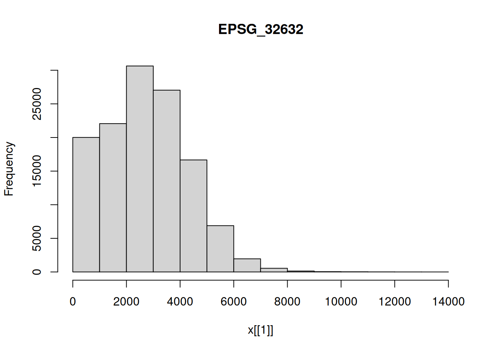

f = "sentinel/S2A_MSIL1C_20180220T105051_N0206_R051_T32ULE_20180221T134037.zip"
granule = system.file(file = f, package = "starsdata")
file.size(granule)
# [1] 769462647
base_name = strsplit(basename(granule), ".zip")[[1]]
s2 = paste0("SENTINEL2_L1C:/vsizip/", granule, "/", base_name,
".SAFE/MTD_MSIL1C.xml:10m:EPSG_32632")
library(stars)
# Loading required package: abind
# Loading required package: sf
# Linking to GEOS 3.10.2, GDAL 3.4.1, PROJ 8.2.1; sf_use_s2() is TRUE
(p = read_stars(s2, proxy = TRUE))
# stars_proxy object with 1 attribute in 1 file(s):
# $EPSG_32632
# [1] "[...]/MTD_MSIL1C.xml:10m:EPSG_32632"
#
# dimension(s):
# from to offset delta refsys values x/y
# x 1 10980 3e+05 10 WGS 84 / UTM z... NULL [x]
# y 1 10980 6e+06 -10 WGS 84 / UTM z... NULL [y]
# band 1 4 NA NA NA B4,...,B8
st_get_dimension_values(p, "band")
# [1] "B4" "B3" "B2" "B8"9 Large datasets
Exercise 9.1
For the S2 image (above), find out in which order the bands are using st_get_dimension_values(), and try to find out (e.g. by internet search) which spectral bands / colors they correspond to.
Exercise 9.2
Compute NDVI for the S2 image, using st_apply and an an appropriate ndvi function. Plot the result to screen, and then write the result to a GeoTIFF. Explain the difference in runtime between plotting and writing.
ndvi_fn = function(r, g, b, nir) (nir-r)/(nir+r)
ndvi = st_apply(p, 1:2, ndvi_fn)
plot(ndvi)
# downsample set to 18Alternatively, one could use
ndvi_slow = function(x) (x[4]-x[1])/(x[4]+x[1])but that is much less efficient (called for every pixel, rather than chunked).
Write to a tiff:
system.time(write_stars(ndvi, "ndvi.tif"))
# ====================================================================
# user system elapsed
# 113.196 3.369 39.278The runtime difference is caused by the fact that plot downsamples, so computes a very small fraction of the available pixels, where write_stars computes all pixels, and then writes them, at full (original) resolution.
Exercise 9.3
Plot an RGB composite of the S2 image, using the rgb argument to plot(), and then by using st_rgb() first.
plot(p, rgb = 1:3)
# downsample set to 18# plot(st_rgb(p[,,,1:3], maxColorValue=13600)) # FIXME: failsExercise 9.4
select five random points from the bounding box of S2, and extract the band values at these points. What is the class of the object returned? Convert the object returned to an sf object.
pts = p %>% st_bbox() %>% st_as_sfc() %>% st_sample(5)
(p5 = st_extract(p, pts))
# stars object with 2 dimensions and 1 attribute
# attribute(s):
# Min. 1st Qu. Median Mean 3rd Qu. Max.
# EPSG_32632 583 1303.75 1923 2261.65 2736.25 4847
# dimension(s):
# from to refsys point
# geometry 1 5 WGS 84 / UTM z... TRUE
# band 1 4 NA NA
# values
# geometry POINT (365738....,...,POINT (356252 ...
# band B4,...,B8
class(p5)
# [1] "stars"
st_as_sf(p5)
# Simple feature collection with 5 features and 4 fields
# Geometry type: POINT
# Dimension: XY
# Bounding box: xmin: 350169.1 ymin: 5898735 xmax: 402203.5 ymax: 5953710
# Projected CRS: WGS 84 / UTM zone 32N
# B4 B3 B2 B8 geometry
# 1 2237 2276 2729 2758 POINT (365738.1 5902981)
# 2 774 1008 1279 2005 POINT (391585.3 5914749)
# 3 1483 1536 1841 2095 POINT (350169.1 5898735)
# 4 1078 1312 1581 583 POINT (402203.5 5953710)
# 5 4651 4337 4823 4847 POINT (356252 5947575)Exercise 9.5
For the 10 km radius circle around POINT(390000 5940000), compute the mean pixel values of the S2 image when downsampling the images with factor 30, and on the original resolution. Compute the relative difference between the results.
b = st_buffer(st_sfc(st_point(c(390000, 5940000)), crs = st_crs(p)),
units::set_units(10, km))
plot(p[,,,1], reset = FALSE, axes = TRUE)
# downsample set to 8
plot(b, col = NA, border = 'green', add = TRUE)p1 = st_as_stars(p, downsample = 30)
a1 = aggregate(p1, b, mean)For the full resolution, this takes a while:
system.time(a2 <- aggregate(p, b, mean))
# user system elapsed
# 43.146 1.344 40.122Relative differences: we will work on the array of the stars objects:
(a1[[1]] - a2[[1]])/((a1[[1]]+a2[[1]])/2)
# [,1] [,2] [,3] [,4]
# [1,] 0.001055567 0.0009431265 0.001103254 7.781836e-05Alternatively one could convert a1 and a2 to a data.frame, using as.data.frame, and work on the third column of the data frames.
Exercise 9.6
Use hist to compute the histogram on the downsampled S2 image. Also do this for each of the bands. Use ggplot2 to compute a single plot with all four histograms in facets.
hist(p1)
hist(p1[,,,1])hist(p1[,,,2])hist(p1[,,,3])hist(p1[,,,4])
library(ggplot2)
ggplot(as.data.frame(p1), aes(x = EPSG_32632)) +
geom_histogram() + facet_wrap(~band)
# `stat_bin()` using `bins = 30`. Pick better value with `binwidth`.Exercise 9.7
Use st_crop to crop the S2 image to the area covered by the 10 km circle. Plot the results. Explore the effect of setting argument crop = FALSE
Exercise 9.8
With the downsampled image, compute the logical layer where all four bands have pixel values higher than 1000. Use a raster algebra expression on the four bands (use split first), or use st_apply for this.
p_spl = split(p1)
p_spl$high = p_spl$B4 > 1000 & p_spl$B3 > 1000 & p_spl$B2 > 1000 & p_spl$B8 > 1000
plot(p_spl["high"])alternative, using st_apply on the band dimension